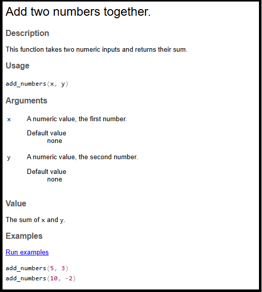
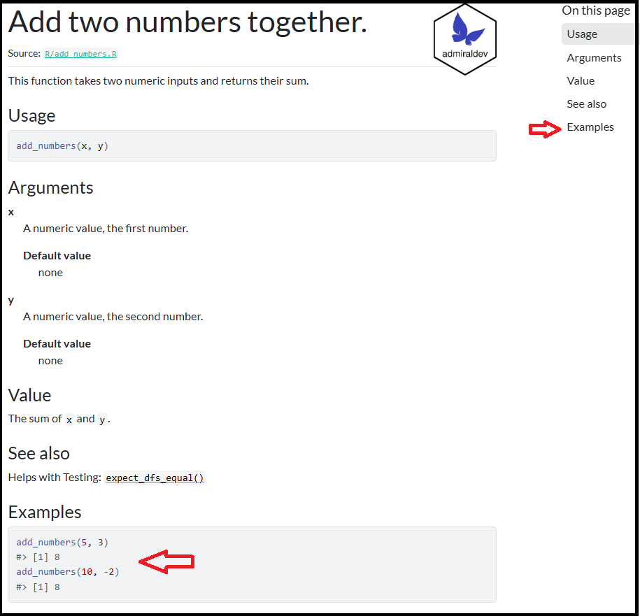
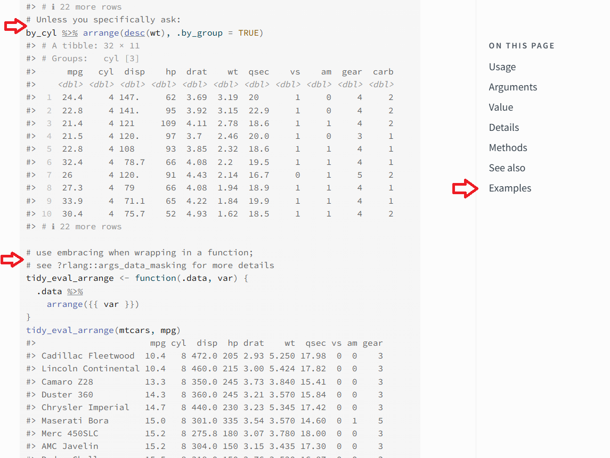
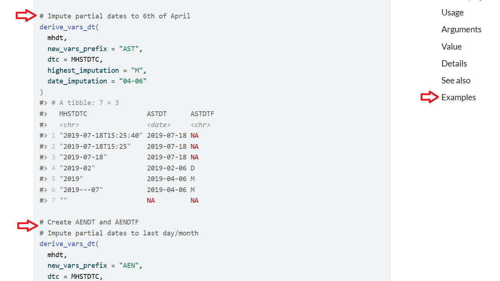
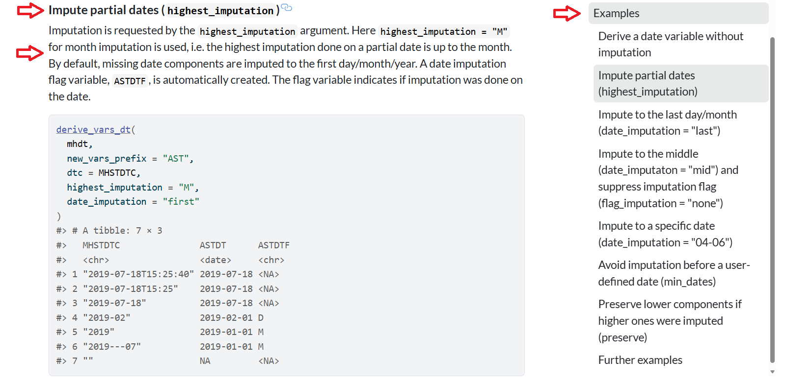
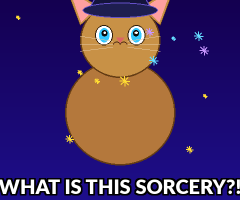

#' Add two numbers together.
#'
#' This function takes two numeric inputs and returns their sum.
#'
#' @param x A numeric value, the first number.
#' @param y A numeric value, the second number.
#' @return The sum of `x` and `y`.
#' @examples
#' add_numbers(5, 3)
#' add_numbers(10, -2)
add_numbers <- function(x, y) {
x + y
}Time to Roclet
admiral’s use of custom roclets to enhance and extend examples in function documentation.
Ben Straub (GSK, Philadelphia, United States)
Required xkcd comic

- Do you read the manual first?
- Do you just dive in and read the manual afterwards?
- I am a dive in and then read the manual later.
The next 20 minutes…
- Brief intro to the problem. Hint: documentation
- Infrastructure behind R package documentation
{admiral}R package and its documentation- How
{admiral}used{roxygen2}extension abilities to solve its problem
So at the end of 20 minutes…
I hope you walk away with:
- How R package documentation is created.
- How admiral package documentation is created.
- Better documentation means users are happy but also allows AI/LLMs to easier understand and harvest information from your R package.
What is the admiral R package?
To provide an open source, modularized toolbox that enables the pharmaceutical programming community to develop ADaM datasets in R.
The package is available from CRAN and can be installed with:
install.packages("admiral")Users guides for doing BDS, OCCDS, TTE, ADSL, ICE, Date/Times and more available.
A sea of documentation!!
Introduction: A Sea Documentation
- Detailed argument definitions and inline examples aid understanding complex functions.
- In
{admiral}, top-notch documentation is a priority. - Problem: As number of functions and complexity of functions grew, documentation became unwieldy and hard to navigate.
- Solution: Extended
{roxygen2}package’srocletsto better display and curate examples. - This presentation explores the technical details and positive impact on
{admiral}’s function examples.
R Packages: The Foundation of the R Ecosystem
- R packages bundle code, data, documentation, and tests in a standardized format.
- They facilitate code sharing and reuse, expanding R’s functionality.
- Key components:
- R functions in
R/directory. Documentation inman/ - Documentation using
roxygen2comments in.Rproduce the.Rdfiles. - Few other folders and needed files - Check out: https://r-pkgs.org/
- R functions in
roxygen2: Streamlining R Docs
- The
roxygen2R package simplifies documentation within R packages. - Developers write documentation directly alongside function definitions using
#'comments. - Benefits:
- Keeps code and documentation co-located, making updates efficient.
- Automatically generates
.Rdfiles (standard R documentation) from comments.
- This system significantly reduces effort, enhancing user understanding of functions.
- Check out: https://roxygen2.r-lib.org/
Roxygen in an .R file
Here’s a brief example of a function add_numbers() with its roxygen documentation:
Documentation Structure - .Rd
% Generated by roxygen2: do not edit by hand
% Please edit documentation in R/add_numbers.R
\name{add_numbers}
\alias{add_numbers}
\title{Add two numbers together.}
\usage{
add_numbers(x, y)
}
\arguments{
\item{x}{A numeric value, the first number.
\describe{
\item{Default value}{none}
}}
\item{y}{A numeric value, the second number.
\describe{
\item{Default value}{none}
}}
}
\value{
The sum of \code{x} and \code{y}.
}
\description{
This function takes two numeric inputs and returns their sum.
}
\examples{
add_numbers(5, 3)
add_numbers(10, -2)
}Don’t touch!
- I do not recommend editing these by hand - ever - unless you want pain!
Let’s recap!
- 📝 Write R code in
.Rfiles - ✍️ Add
#'roxygen comments above functions objects - 🏷️ Use roxygen tags
@param,@return,@examples, etc: - ▶️ Run
devtools::document()or Ctrl/Cmd + Shift + D - ⚙️
{roxygen2}processes.Rfiles extracts comments & tags - 📄
.Rdfiles auto-generated inman/directory - 📚 R help system displays documentation to users
Render in R help file and pkgdown


{dplyr} - a package to follow!
{dplyr}

- #’s used to delineate new example with explanation
- Creates a sea of examples
arrange()Examples are not navigable on right hand side
{admiral} - in the footsteps…
{admiral} 1.2.0

- #’s used to delineate new example with explanation
- Creates a sea of examples
derive_vars_dt()Examples are not navigable on right hand side
{admiral} 1.3.0

- A nice linkable title
- Description of example
- Right hand side has navigable example
derive_vars_dt()Examples are not navigable on right hand side
How was this done?

{roxygen2}allows for extensions{admiraldev}houses the functions inroclet_rdx.Rto allow for extensions
Extending the roclet
#' A Demo Function
#'
#' This function is used to demonstrate the custom tags of the `rdx_roclet()`.
#'
#' @param x An argument
#' @param number A number
#' @permitted A number
#' @param letter A letter
#' @permitted [char_scalar]
#' @default The first letter of the alphabet
#' @keywords internal
#' @examplesx
#' @info This is the introduction.
#' @caption A simple example
#' @info This is a simple example showing the default behaviour.
#' @code demo_fun(1)
#' @caption An example with a different letter
#' @info This example shows that the `letter` argument does not
#' affect the output.
#' @code demo_fun(1, letter = "b")
demo_fun <- function(x, number = 1, letter = "a") 42Eck! A small subset of the .Rd
% Generated by roxygen2: do not edit by hand
% Please edit documentation in R/demo_fun.R
\name{demo_fun}
\alias{demo_fun}
\title{A Demo Function}
\usage{
demo_fun(x, number = 1, letter = "a")
}
...
\keyword{internal}
\section{Examples}{
This is the introduction.
\subsection{A simple example}{
This is a simple example showing the default behaviour.
\if{html}{\out{<div class="sourceCode r">}}\preformatted{demo_fun(1)
#> [1] 42}\if{html}{\out{</div>}}}
\subsection{An example with a different letter}{
This example shows that the \code{letter} argument does not affect the output.
\if{html}{\out{<div class="sourceCode r">}}\preformatted{demo_fun(1, letter = "b")
#> [1] 42}\if{html}{\out{</div>}}}}Technical Takeaway
- New Tags on the Block:
@examplesx@caption@info@code
- Get into the purpose, how it works and the processing (briefly!!)
@examplesx - The Examples Section
Purpose: Marks the beginning of the entire examples section in Roxygen documentation, serving as a structural tag.
How it Works: Signals the transform_examplesx() function to start processing custom Roxygen tags for examples.
Processing: The transform_examplesx() function orchestrates the grouping of @caption, @info, and @code tags. It executes R code from @code, captures output, handles expected conditions, and combines these into a cohesive examplex tag. It also cleanses output of problematic Unicode characters to prevent LaTeX errors.
@caption - Example Title
Purpose: Provides a descriptive title or caption for an individual example within the examples section.
How it Works: Each @caption tag initiates a new example block, with the text following it becoming the title.
Processing: The transform_examplesx() function collects the caption text. In the final .Rd documentation output, this caption is formatted as a \subsection{} within the main \section{Examples}{}.
@info - Example Description
Purpose: Offers additional descriptive text or context for an example, explaining its demonstration or specific considerations.
How it Works: It is placed after an @caption and before an @code tag, containing explanatory text for that specific example.
Processing: The transform_examplesx() function appends this descriptive text to the current example block’s contents, integrating it into the overall example documentation.
@code - Executable Example Code
Purpose: Provides the actual R code for an example, which is executed during the R package check, and its output is included in the documentation.
How it Works: The R code follows the @code tag. It can include an optional [expected_cnds = "warning"] argument to specify anticipated conditions like warnings or errors without causing check failures.
Processing: transform_examplesx() extracts the code and any expected_cnds options, then calls execute_example(). This function runs the code in a controlled environment, captures console output, messages, warnings, and errors. Unexpected conditions (not listed in expected_cnds) lead to an error and an R CMD check failure, ensuring examples are functional and correct. The captured code and its output are then formatted and integrated into the example’s contents.
Conclusion
The admiral R package faced challenges with unwieldy function documentation due to complex and numerous examples.
To address this, admiral extended roxygen2’s roclets by introducing custom Roxygen tags:
@examplesx,@caption,@info, and@code.These custom tags enable a structured, user-friendly presentation of examples, providing scaffolding for complex function usage.
This innovation significantly improved the overall user experience and the quality of admiral’s function documentation.
In this age of AI - high quality documentation will be key to a software products long-term usefulness.
Question
What is the name of the documentation package that could be extended to address admiral’s needs?
Resources
R Packages
roxygen2
dplyr arrange()
admiral
admiraldev roclet_rdx.R